Radiative recombination, quantum efficiency and LED characteristics; the photoelectric effect, PIN and avalanche photodiodes with responsivity; the photovoltaic effect, equivalent circuit, fill factor and conversion efficiency of solar cells — complete GATE EC, IES and PSU coverage with derivations, solved numericals and inline diagrams.
Every PN junction studied so far has dealt with electrons and holes moving under an electric field — a purely electrical story. Optoelectronic devices add a second character to that story: light. A photon can be absorbed to create an electron-hole pair, or an electron-hole pair can recombine to release a photon. This two-way conversion between optical and electrical energy is the foundation of three devices that quietly run modern life — the LED that lights every phone screen and traffic signal, the photodiode that recovers a signal at the end of a fibre-optic cable, and the solar cell that turns sunlight directly into electricity.
All three devices are built on the same PN junction physics. The only difference is the direction of energy conversion and the operating bias. LEDs convert electrical energy → light (forward bias). Photodiodes convert light → electrical signal (reverse bias). Solar cells convert light → electrical power (no external bias — they generate their own voltage).
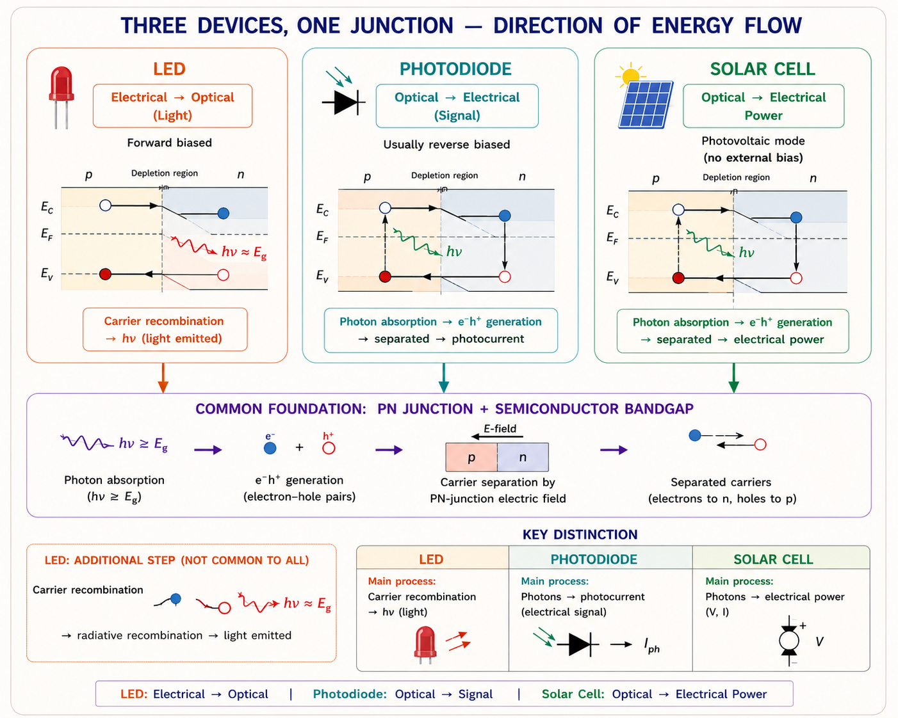
Whether a semiconductor can emit light efficiently depends entirely on the shape of its energy-momentum (E-k) diagram. In a crystal, electrons occupy energy bands described not just by energy E but also by crystal momentum k. The conduction band minimum and valence band maximum may line up at the same value of k (direct bandgap) or at different values of k (indirect bandgap).
Think of an electron falling from the conduction band to the valence band as a ball rolling downhill on the E-k curve. If the bottom of the conduction-band valley is directly above the top of the valence-band hill (same k), the ball can fall straight down — energy is released purely as a photon. If the valley is offset sideways (different k), the ball must also "shift sideways" while falling. A photon alone (almost zero momentum) cannot supply that sideways momentum, so a lattice vibration (a phonon) must assist the transition — making the process slow and mostly non-radiative.
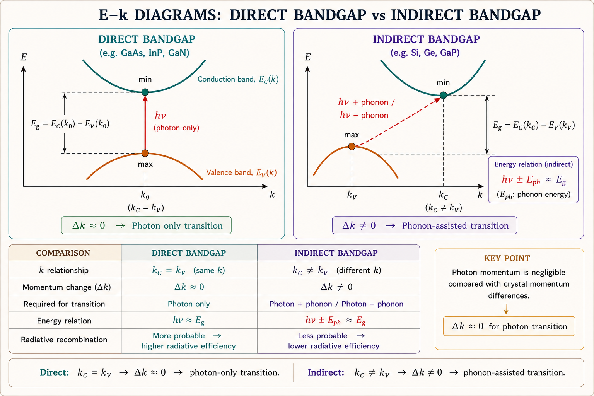
When excess electron-hole pairs exist (from forward bias injection or optical absorption), they recombine back to equilibrium through three competing paths:
| Mechanism | Description | Photon Emitted? |
|---|---|---|
| Radiative (band-to-band) | Electron drops from conduction band directly to a hole in the valence band | Yes — useful for LEDs |
| Shockley–Read–Hall (SRH) | Recombination via a trap/defect level inside the bandgap | No — energy lost as heat |
| Auger recombination | Energy transferred to a third carrier instead of a photon (significant at high injection) | No — energy lost as heat / kinetic energy |
Silicon, the workhorse of digital electronics, is an indirect bandgap material — this is precisely why silicon LEDs are not commercially practical. Visible and infrared LEDs instead use direct-gap compound semiconductors such as GaAs, GaAsP, GaP, GaN and their alloys, chosen specifically so that radiative recombination dominates over non-radiative paths.
A Light Emitting Diode is a heavily doped, direct-bandgap PN junction operated under forward bias. Forward bias lowers the junction barrier and injects a large concentration of electrons into the p-region and holes into the n-region — far beyond their equilibrium minority-carrier values. Close to the junction, these injected minority carriers recombine radiatively with the majority carriers already present, releasing the recombination energy as a photon.
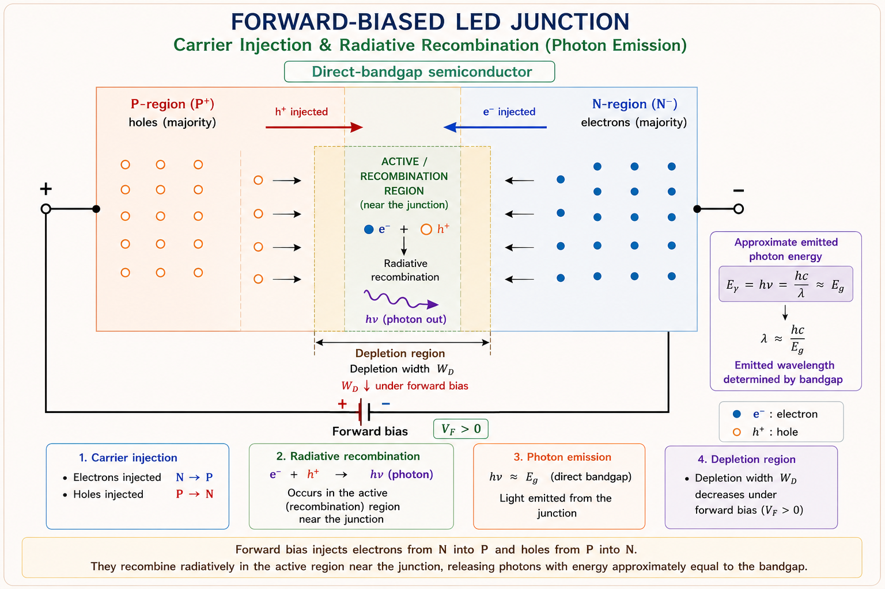
Each radiative recombination event releases a photon whose energy equals the bandgap energy of the semiconductor:
Rearranging for wavelength and substituting the constants h (Planck's constant) and c (speed of light) in convenient units gives the standard GATE-friendly relation:
The emitted colour is fixed entirely by the bandgap of the material — not by the drive current or the doping. Increasing current increases brightness (more photons per second), not colour, because every recombination event still releases the same energy Eg. This is why LEDs of different colours require entirely different semiconductor materials.
| Material | Bandgap Eg (eV) | ≈ Wavelength | Colour |
|---|---|---|---|
| GaAs | 1.43 | ≈ 870 nm | Infrared |
| GaAsP | 1.9 – 2.0 | ≈ 650 nm | Red |
| GaAsP (varied alloy) | ≈ 2.1 | ≈ 590 nm | Orange / Yellow |
| GaP | ≈ 2.26 | ≈ 550 nm | Green |
| GaN / InGaN | ≈ 3.0 – 3.4 | ≈ 400 – 460 nm | Blue / Violet |
White LEDs are usually not a single direct-emission material. The most common method coats a blue InGaN LED chip with a yellow phosphor: part of the blue light is converted by the phosphor to a broad yellow band, and the mix of remaining blue and converted yellow light appears white to the eye.
What if the doping is increased? Higher doping increases the available majority carrier concentration near the junction, raising the recombination rate and therefore brightness, but it does not change the emitted wavelength. What if the LED is reverse biased? No minority-carrier injection occurs, so there is no light output — only a small reverse leakage current (and the LED can be damaged if reverse voltage exceeds its low breakdown rating).
Not every injected carrier recombines radiatively, and not every photon generated inside the semiconductor actually leaves the device. LED performance is therefore described using a chain of three efficiencies, each representing a different loss mechanism.
Internal quantum efficiency compares the radiative recombination rate to the total recombination rate (radiative + non-radiative):
Here Rr is the radiative recombination rate and Rnr the non-radiative rate; τr and τnr are the corresponding carrier lifetimes. A material with very few defect/trap states (long τnr) gives ηint close to 1.
A photon generated deep inside the semiconductor must cross the interface from the high-refractive- index semiconductor (n ≈ 3.5) into air (n ≈ 1) to be useful. By Snell's law, only photons striking the surface within a narrow escape cone defined by the critical angle can exit; the rest undergo total internal reflection and are eventually reabsorbed.
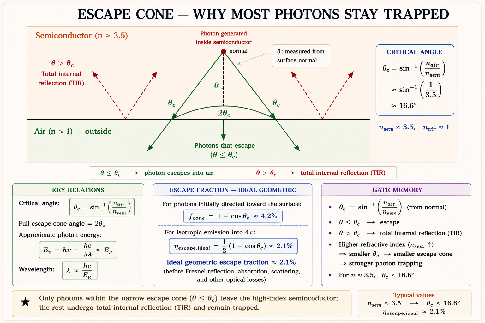
For GaAs (n ≈ 3.6) this gives an extraction efficiency of barely a few percent for a flat surface — which is why practical LEDs use domed encapsulation, textured surfaces, or shaped dies to enlarge the effective escape cone and recycle reflected light.
A related, more practical figure of merit is the LED's power (luminous) efficiency, which compares optical output power to electrical input power:
GATE frequently tests whether students can distinguish the three efficiencies and combine them correctly:
Electrically, an LED still obeys the ordinary diode equation \( I = I_0\!\left(e^{qV/kT}-1\right) \), but its forward knee voltage is set by the bandgap rather than being a fixed ≈0.7 V as in silicon. A wider bandgap means a larger built-in potential, which means a larger forward voltage is needed before significant current — and light — flows.
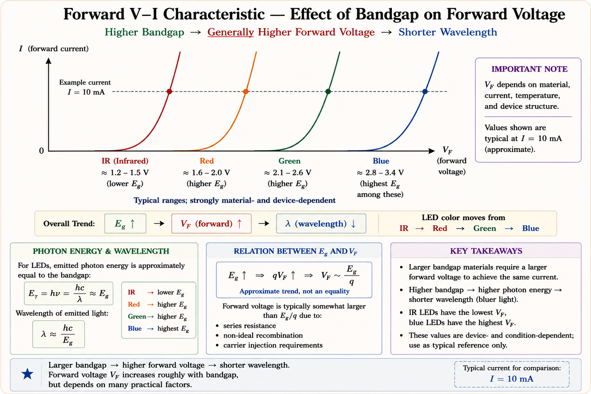
High-performance LEDs sandwich a thin active layer of one bandgap between two wider-bandgap "cladding" layers (a double-heterostructure). The bandgap discontinuities act like potential walls that confine both injected carriers and the generated light to the thin active region, raising the radiative recombination rate and improving extraction.
Students often apply the same ≈0.7 V "rule of thumb" used for silicon diodes to every LED. This is incorrect — the forward knee voltage of an LED depends on its bandgap and can range from about 1.2 V (infrared) to over 3 V (blue/UV). Always relate the knee voltage to Eg using \( qV_{knee} \approx E_g \) as a first approximation.
In optical fibre communication, the choice between an LED and a laser diode as the source depends on bandwidth and distance: LEDs (often edge-emitting, infrared, around 850 nm or 1300 nm) are used for shorter, lower-bit-rate links because of their lower cost and longer lifetime; laser diodes are preferred for long-haul, high-bit-rate links because of their narrow spectral width and higher launched power.
A photodiode runs the LED process backwards: light goes in, electrical current comes out. The underlying mechanism is the internal photoelectric effect — when a photon with energy greater than the bandgap strikes the semiconductor, it can excite an electron from the valence band to the conduction band, creating an electron-hole pair (EHP).
Only photons with energy \( h\nu \ge E_g \) can generate an EHP; lower-energy (longer wavelength) photons simply pass through the material without being absorbed. This sets a long-wavelength cutoff for every photodetector material, given by \( \lambda_c = \frac{hc}{E_g} \) — exactly the same relation used for LED emission wavelength, but now describing the limit of absorption rather than emission.
A simple PN junction photodiode is operated under reverse bias. The reverse bias widens the depletion region and sets up a strong electric field across it. When a photon is absorbed inside (or close to) this depletion region, the generated electron and hole are swept apart by the field — the electron toward the n-side, the hole toward the p-side — producing a measurable photocurrent in the external circuit.
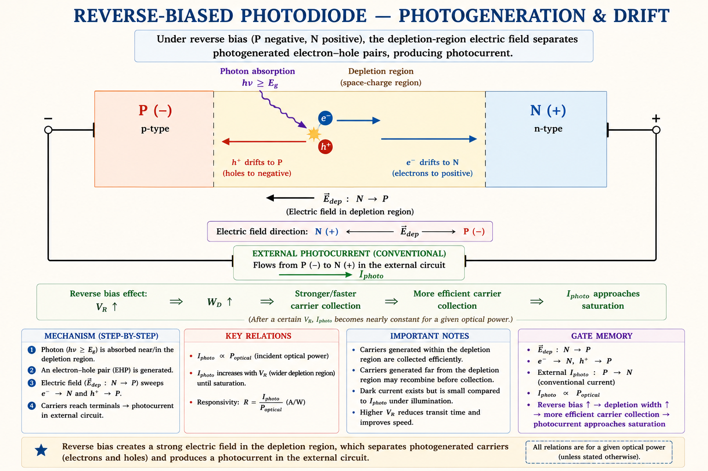
Why reverse bias and not forward bias? Reverse bias widens the depletion region (more absorbing volume) and produces a strong, nearly current-independent electric field, giving fast, linear, and high carrier-collection efficiency. Forward bias would instead inject carriers and create a large dark current that swamps the small photocurrent.
A simple PN photodiode has a thin, fixed depletion width, which limits how much light it can absorb and how fast it can respond. The PIN photodiode solves this by inserting a lightly doped (nearly Intrinsic) layer between the P and N regions, giving the device its name: P-I-N.
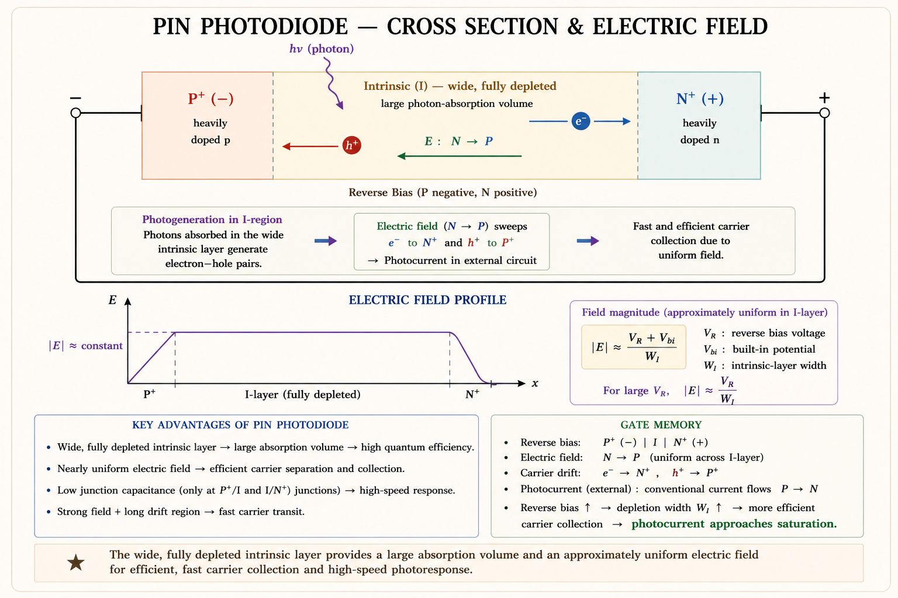
| Parameter | Simple PN Photodiode | PIN Photodiode |
|---|---|---|
| Depletion width | Narrow, bias-dependent | Wide, set by I-layer thickness |
| Quantum efficiency | Lower | Higher |
| Junction capacitance | Higher | Lower |
| Speed / bandwidth | Slower | Faster |
| Typical use | General light sensing | Optical-fibre receivers |
Fibre-optic systems operate in low-attenuation windows around 850 nm (short-haul, silicon PIN detectors), 1310 nm and 1550 nm (long-haul, where InGaAs PIN photodiodes are used because silicon's bandgap cutoff wavelength of about 1.1 μm makes it transparent — and hence useless — at 1310/1550 nm).
When the optical signal arriving at a receiver is extremely weak — as at the end of a long fibre link — a PIN photodiode's photocurrent may be too small to rise meaningfully above the electronic amplifier's own noise. The Avalanche Photodiode solves this by building internal current gain directly into the detector, before the noisy amplifier ever sees the signal.
An APD includes a region with an extremely high electric field. A photogenerated carrier drifting through this region is accelerated so strongly that it gains enough kinetic energy to knock loose additional electron-hole pairs on collision with the lattice — a process called impact ionisation. Each new carrier pair can itself be accelerated and create further pairs, producing a multiplying "avalanche" of carriers from a single absorbed photon.
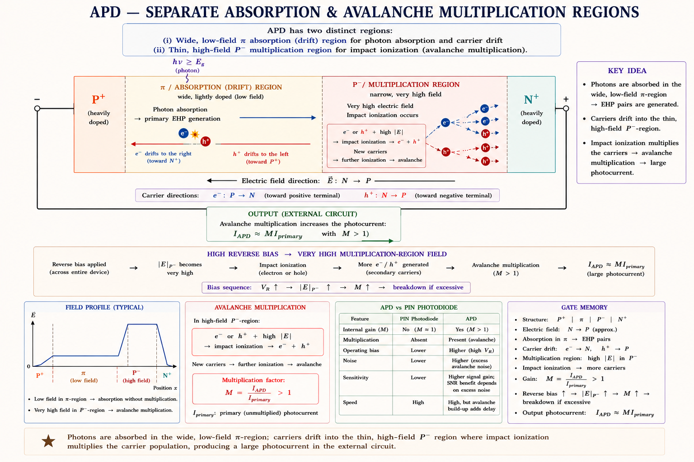
The current gain provided by the avalanche process is described by the multiplication factor:
While gain helps overcome amplifier noise, the avalanche process is itself statistical — not every carrier multiplies by exactly the same amount — which introduces additional excess noise, quantified by an excess noise factor F that increases with M. This is the central trade-off in APD design: more gain helps signal-to-noise up to a point, beyond which the added avalanche noise dominates and SNR worsens.
| Parameter | PIN Photodiode | Avalanche Photodiode (APD) |
|---|---|---|
| Internal gain | None (M = 1) | M = tens to hundreds |
| Bias voltage | Few volts to ~20 V | High — tens to ~100s of volts |
| Noise | Lower (no excess avalanche noise) | Higher — excess noise factor F |
| Sensitivity | Adequate for moderate signals | Best for very weak / long-haul signals |
| Cost / complexity | Lower | Higher (precision high-field region) |
Students sometimes assume "more gain is always better" for an APD. In reality, raising M beyond an optimum point increases excess noise faster than it increases signal, so the signal-to-noise ratio actually starts to fall. Every APD has an optimum multiplication factor for best receiver sensitivity.
The single most quoted figure of merit for any photodetector is its responsivity — the ratio of output photocurrent to incident optical power:
Responsivity links directly back to quantum efficiency η, the fraction of incident photons that produce a collected electron-hole pair:
Combining the two and substituting hν = hc/λ gives the practical relation used in almost every GATE numerical:
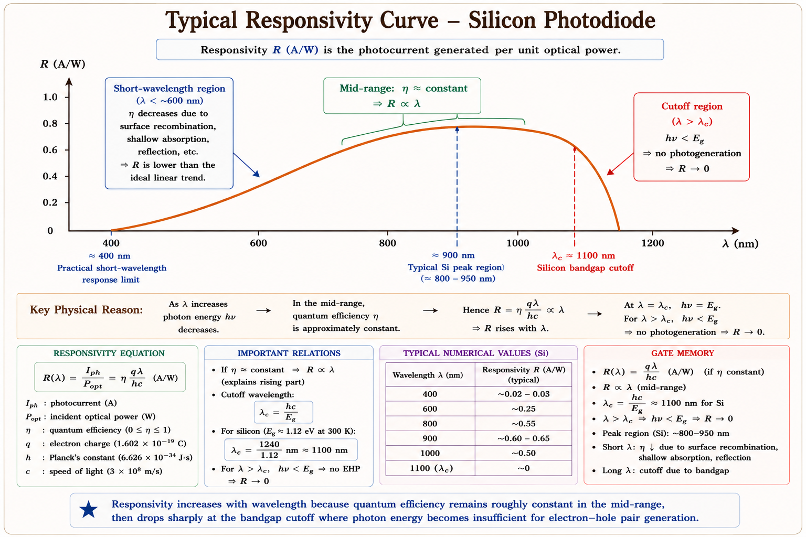
| Parameter | Meaning | Design Goal |
|---|---|---|
| Dark current | Current that flows under reverse bias with no incident light | Minimise — sets detection floor |
| Response time / bandwidth | How fast the photocurrent follows a changing optical signal | Maximise (minimise junction capacitance & transit time) |
| NEP (Noise Equivalent Power) | Optical power that gives a signal-to-noise ratio of 1 | Minimise — lower is more sensitive |
| Cutoff wavelength \( \lambda_c \) | \( \lambda_c = \frac{hc}{E_g} \) — longest wavelength the material can absorb | Match to the operating wavelength of the system |
"R rides on λ, capped by Eg." Responsivity grows roughly in proportion to wavelength (R ∝ λ for fixed η) — but only up to the cutoff wavelength set by the bandgap; beyond that, the material is transparent to the light and R collapses to zero.
A solar cell is, structurally, a large-area PN junction photodiode — but it is used in an entirely different way. Instead of being reverse-biased to detect a signal, a solar cell is left unbiased and asked to generate its own voltage and deliver power to a load. This is the photovoltaic effect.
Sunlight generates electron-hole pairs throughout the junction and nearby regions. The built-in electric field of the depletion region — present even with zero external bias — immediately separates these pairs: electrons are pushed to the n-side, holes to the p-side. This charge separation accumulates until the resulting forward photovoltage is large enough that the junction's own forward diffusion current exactly balances the light-generated current — at which point the cell sits at its open-circuit voltage if no load is connected, or delivers current to an external load if one is.
Under illumination, the diode current equation gains an extra term — the light-generated current IL — which flows in the opposite sense to the normal forward diode current:
Two limiting points on this curve define the cell's two headline ratings:
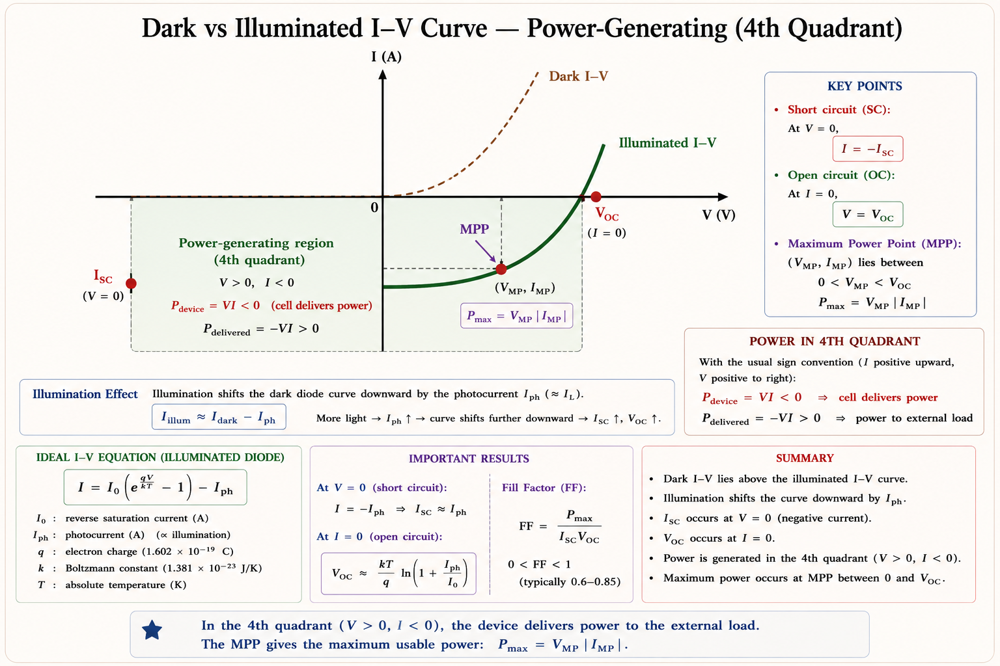
What if illumination intensity doubles? IL (and hence Isc) roughly doubles since it is proportional to photon flux, but Voc rises only logarithmically (Voc ∝ ln IL) — a much smaller change. What if the cell is short-circuited? V = 0, so all of IL flows as Isc, but the power delivered (P = VI) is zero — power is also zero at open circuit. Useful power exists only between these two extremes.
The ideal photovoltaic relation \( I = I_L - I_0\left(e^{qV/kT}-1\right) \) corresponds to a simple equivalent circuit: a constant current source IL (representing photogeneration) connected in parallel with an ordinary PN-junction diode. A real fabricated cell, however, has additional parasitic resistances that must be included for accurate modelling.
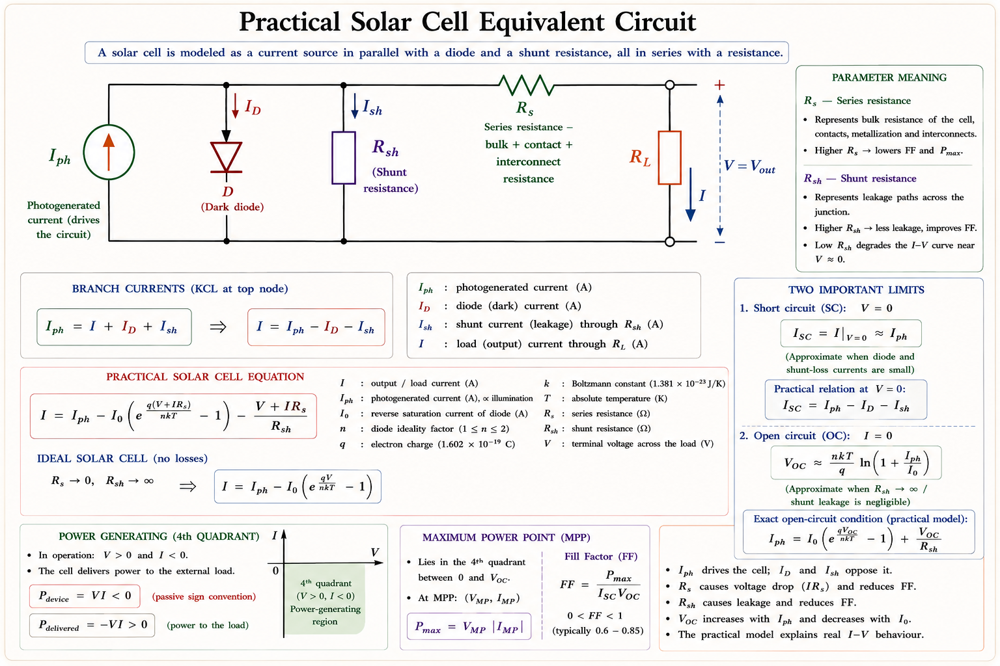
It is easy to forget that Rs and Rsh affect different parts of the I-V curve. Rs mainly degrades performance near Voc (high voltage, low current region), while Rsh mainly degrades performance near Isc (low voltage, high current region). An ideal cell would have Rs → 0 and Rsh → ∞.
Neither Isc nor Voc alone tells the full story, because the cell never actually operates at both simultaneously (recall: power is zero at each of those extremes). The useful output is the maximum power point (Vm, Im) somewhere on the knee of the curve, and the Fill Factor (FF) measures how close that point comes to the ideal "rectangle" defined by Isc and Voc.
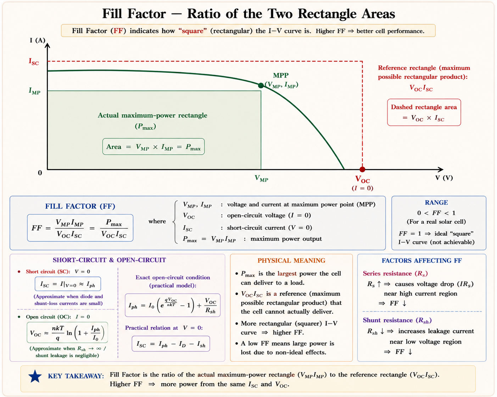
where Pin is the incident solar power on the cell area (commonly the standard test condition of 1000 W/m², "1-sun" AM1.5 spectrum). This single number — efficiency — is what gets quoted on every solar panel datasheet, and it depends on the material's bandgap (which sets the achievable Voc and the fraction of the solar spectrum that can be absorbed), Rs/Rsh quality, and surface/anti-reflection design.
| Cell Type | Typical FF | Typical Efficiency | Notes |
|---|---|---|---|
| Crystalline Silicon | 0.75 – 0.82 | 15% – 22% | Most common commercial cell |
| GaAs single junction | 0.80 – 0.88 | 25% – 29% | Higher Voc, used in space applications |
| Multi-junction (tandem) | 0.80+ | 35%+ (lab record >45%) | Stacks materials to absorb more spectrum |
| Amorphous / thin-film | 0.55 – 0.70 | 6% – 12% | Lower cost, flexible substrates |
A perfectly "square" I-V knee gives FF = 1 (impossible in practice). Every real resistance loss — series or shunt — rounds the corner of the knee, shrinking the green rectangle in Fig 11.12 and lowering both FF and overall efficiency together.
Given: Eg = 1.43 eV
Using the practical wavelength–bandgap relation:
867 nm lies in the near-infrared region — consistent with GaAs being widely used for infrared LEDs (remote controls, IR sensing) rather than visible-light indicators.
Given: ηint = 0.65, n = 3.6
Step 1 — Extraction efficiency:
Step 2 — External quantum efficiency:
Even with a fairly high internal efficiency, the planar extraction efficiency is so small that the overall external efficiency drops below 2% — this is exactly why practical LED packages use dome lenses, textured surfaces, or shaped chips to raise the effective extraction efficiency far above this simple planar estimate.
Given: η = 0.80, λ = 850 nm = 0.85 μm, Popt = 10 μW
Step 1 — Responsivity:
Step 2 — Photocurrent:
This is a typical "two-step" GATE pattern: first find R from η and λ, then multiply by the given optical power to get the photocurrent. Always keep λ in micrometres when using the 1.24 shortcut.
Given: Voc = 0.6 V, Isc = 200 mA, Vm = 0.48 V, Im = 180 mA, Pin = 100 mW/cm² × 4 cm² = 400 mW
Step 1 — Maximum power:
Step 2 — Fill Factor:
Step 3 — Conversion efficiency:
FF = 0.72 is a realistic value for a good crystalline-silicon cell. Always convert Pin using the actual illuminated area — a frequent numerical slip is forgetting to multiply the power density by the cell area.
These topics have repeatedly appeared across GATE EC and IES Electronics & Telecom papers:
Silicon is rarely used to fabricate visible-light LEDs primarily because:
Explanation: Silicon's conduction-band minimum and valence-band maximum occur at different values of k. Band-to-band recombination would require simultaneous photon and phonon emission to conserve momentum, which is a low-probability event — non-radiative recombination dominates instead, making silicon LEDs impractical.
A photodetector material has a bandgap of 0.775 eV. The longest wavelength of light that the material can absorb is closest to:
Explanation: λc = 1.24/Eg(eV) = 1.24/0.775 ≈ 1.6 μm. Photons with longer wavelength (lower energy than Eg) pass through without being absorbed, so this is the absorption cutoff — consistent with materials such as InGaAs used at the 1550 nm optical communication window.
Compared with a simple PN photodiode, a PIN photodiode shows:
Explanation: The wide intrinsic layer increases the absorbing volume (raising quantum efficiency) and increases depletion width (lowering junction capacitance), which together with a near-uniform field generally improve bandwidth — this is precisely why PIN photodiodes are the standard detector in fibre-optic receivers.
Increasing the series resistance Rs of a solar cell, while keeping all other parameters fixed, mainly causes:
Explanation: Rs drops voltage delivered to the external load, rounding off the knee of the I-V curve near \( V_{oc} \). This shrinks the VmIm rectangle relative to the IscVoc rectangle, lowering FF and Pmax, while Isc (measured at V = 0) is barely affected.
Three devices, one junction, three jobs — LED Emits light under forward bias, Photodiode senses light under reverse bias, Solar cell delivers power with no external bias at all. If you remember the bias condition, the rest of the device's behaviour follows logically.
Stuck on a derivation or want a related GATE numerical solved? Ask below.
Forward-biased direct-bandgap PN junction. \( h\nu = E_g \rightarrow \lambda(\mu m) = \frac{1.24}{E_g(\text{eV})} \). Colour fixed by material, brightness fixed by current. Si is indirect — no efficient Si LEDs.
\( \eta_{ext} = \eta_{int} \times \eta_{extraction} \). \( \eta_{extraction} \approx \frac{1}{4n^2} \) for a flat surface — usually only a few percent, improved by domed/textured packaging.
Reverse-biased junction; absorbed photon (\( h\nu \ge E_g \)) creates EHP, field separates carriers → photocurrent. Cutoff \( \lambda_c = \frac{hc}{E_g} \) sets the long-wavelength limit.
PIN: wide intrinsic layer → higher \( \eta \), lower capacitance, no internal gain (\( M=1 \)). APD: high-field multiplication region gives gain \( M>1 \) for weak signals, at the cost of excess noise.
\( R = \frac{\eta q\lambda}{hc} \approx \frac{\eta\lambda(\mu m)}{1.24} \text{ [A/W]} \). Rises with \( \lambda \) for fixed \( \eta \), collapses beyond the material's bandgap-defined cutoff wavelength.
Unbiased junction under light generates its own voltage. \( I = I_L - I_0\left(e^{qV/kT}-1\right) \). \( I_{sc} = I_L \). \( V_{oc} = \frac{kT}{q}\ln\left(\frac{I_L}{I_0}\right) \). Power exists only in the 4th quadrant.
Current source \( I_L \) ∥ diode, with series \( R_s \) (degrades near \( V_{oc} \)) and shunt \( R_{sh} \) (degrades near \( I_{sc} \)). Ideal cell: \( R_s \rightarrow 0, R_{sh} \rightarrow \infty \).
\( FF = \frac{V_m I_m}{V_{oc} I_{sc}} \), typically 0.7–0.85 for good cells. \( \eta = \frac{FF \cdot V_{oc} \cdot I_{sc}}{P_{in}} \). Si cells ≈15–22%, GaAs/multi-junction substantially higher.
Bipolar Junction Transistor (BJT) — construction, current components, the Ebers-Moll model, current gains α and β, the Early effect, and the BJT's regions of operation, with full GATE & IES derivations and worked examples.
All technical content is derived from the following standard textbooks and learning resources. All explanations, derivations, diagrams and examples are original to Aarova AI.